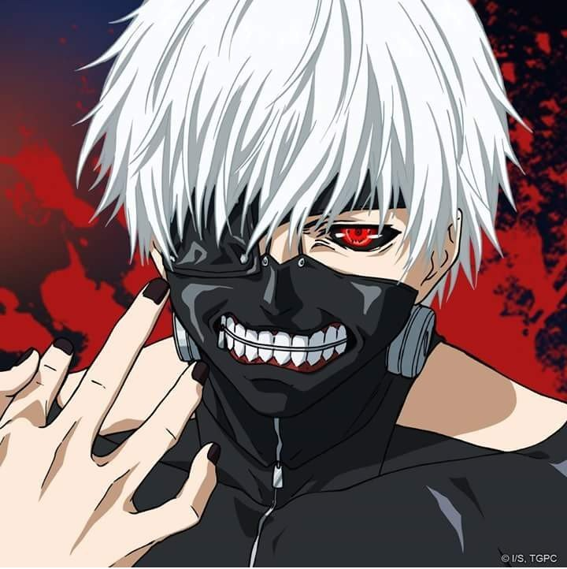

Cansado de ver memes de animes que parecen geniales pero que nadie dice como se llaman ni como verlos?
Cansado de entrar a páginas con mil publicidades para ver un capítulo con mal audio?
Cansado de empezar animes y que resulten ser más aburridos que ver crecer una planta?
CANSADO DE LEER ESTO CON VOZ DE LOCUTOR?
pues te tenemos la solución
Ahora con Mundo Otaku serás capaz de ver una gran variedad de animes que realmente merecen la pena darles tiempo de tu miserable vida, aunque admitámoslo, si estás acá es por que no tienes una.
PERO TRANQUILO el anime ocupará ese espacio que falta en tu vida, así que revisa cúal anime te interesa más, ve imágenes, fragméntos épicos, habla de ellos en el foro con otros antisociales como tu y discute por quien sería el más poderoso entre todos los personajes
¿Que esperas? dale un vistazo a toda esta hermosa lista y comienza en un mundo único
Este es un top solo DE LO MEJOR DE LO MEJOR en animes, al menos según mi criterio, así que toma asiento y
disfruta de cada uno de estos épicos animes.
Recuerda que haciendo clic en el nombre de cada anime se te llevará
directo hacia una página para comenzar a ver cada uno de ellos, así que olvidate del problema de no saber en donde verlo.
Esto es MUNDO OTAKU salvando tu día :D
Tokyo Ghoul
En un mundo separado entre humanos y ghouls, un joven tras casi ser devorado por un ghoul, logra salvarse debido a un accidente
pero para salvar su vida se le transplanta un organo del ghoul que lo iba a matar, ahora este joven debe vivir como mitad humano,
mitad ghoul. se recomienda terapia tras ver la serie :D
Estado: FINALIZADO

Shingeki No Kyojin
Parece un genial anime donde humanos se enfrentan a titanes pero esto se queda corto para explicar este anime que esconde una increible historia (no lo decimos porque sería spoiler, y creeme, no querés que te spoileen esto) Consta de un total de 4 temporadas aun que falta que se suba una última parte de la cuarta temporada pero la historia ya terminó en el manga, muy recomendado para ver en un fin de semana
Estado: FINALIZADO (casi)